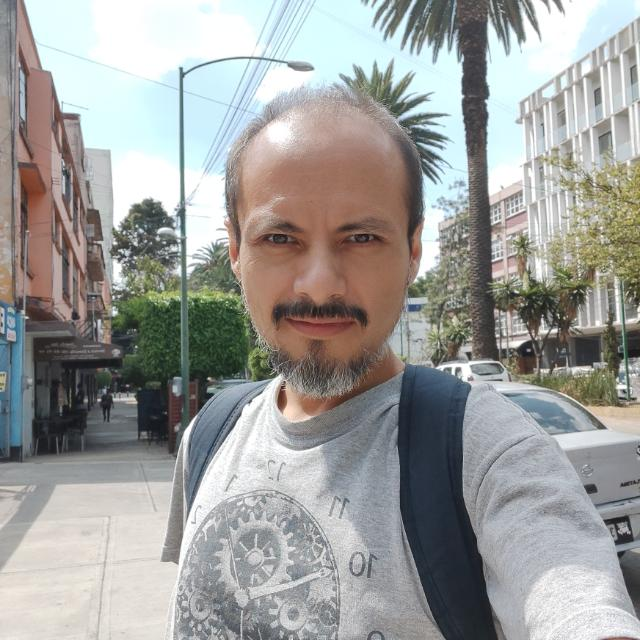

Pedro Arturo Góngora Luna

Mexicano (CDMX, 1978), Ingeniero en sistemas computacionales egresado del ITESM-CEM, maestro y doctor en Ciencias de la computación egresado de la UNAM, maestría trunca en Artes visuales (1 año), también en la UNAM.
Habilidades profesionales
- Gusto por el trabajo en equipo y el liderazgo tecnológico.
- Buenas habilidades de comunicación.
- Bilingüe español-inglés: hablado (80%, medio laboral) y escrito (95%, ídem).
- Pensamiento crítico e independiente.
- Culto y creativo.
Habilidades técnicas
- Análisis, arquitectura, diseño y desarrollo de sistemas de información basados en Web.
- Análisis y diseño formal de algoritmos.
-
Fullstack developer:
- NodeJs, ExpressJs, MongoDB, ReactJs, Redux, AWS.
- Laravel, Wordpress, arquitecturas LAMP.
- Excelente escritura técnica bilingüe.
Temas docentes y training
- Programación: Orientación a objetos, funcional, varios lenguajes y paradigmas. Punto de vista práctico (stacks y frameworks Javascript, programación distribuida y para la Web) o teórico (programación funcional, lenguajes y paradigmas).
- Teoría: Análisis y diseño formal de algoritmos, paradigmas de programación, teoría de la computación, matemáticas discretas, lógica formal, filosofía de la computación.